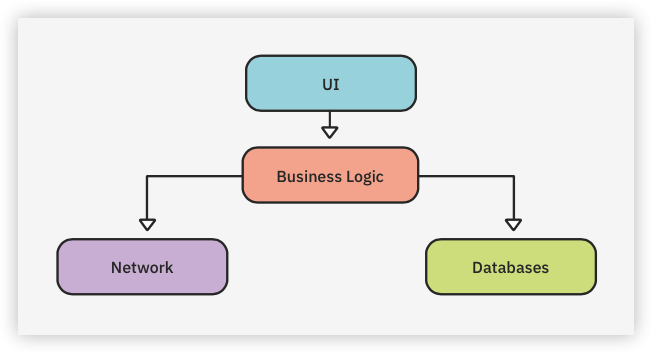
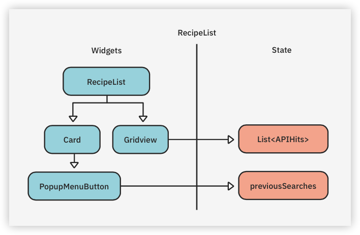
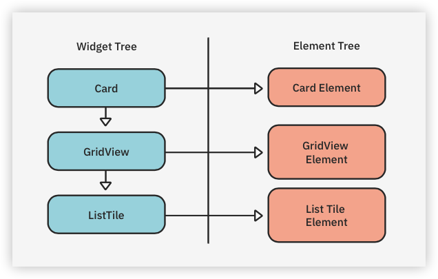
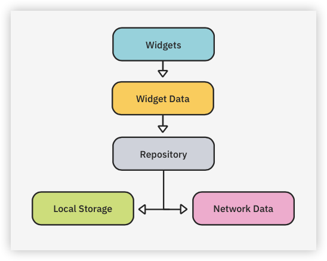
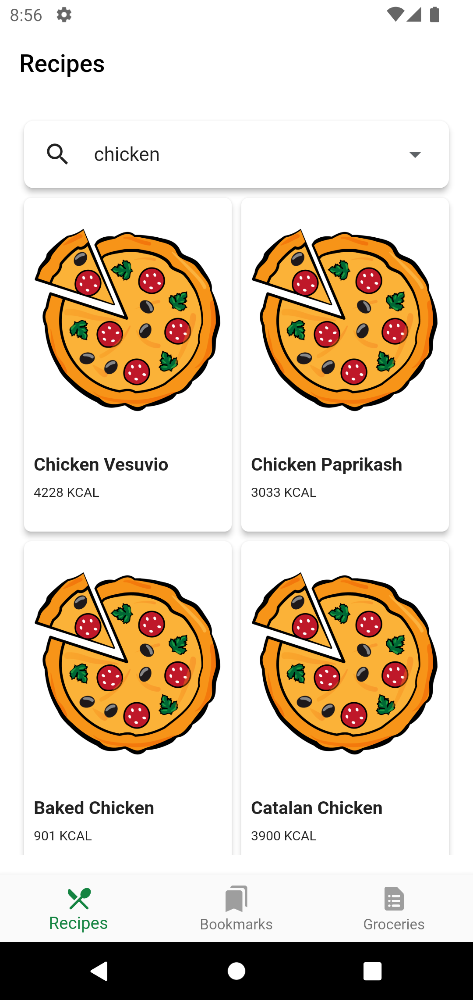
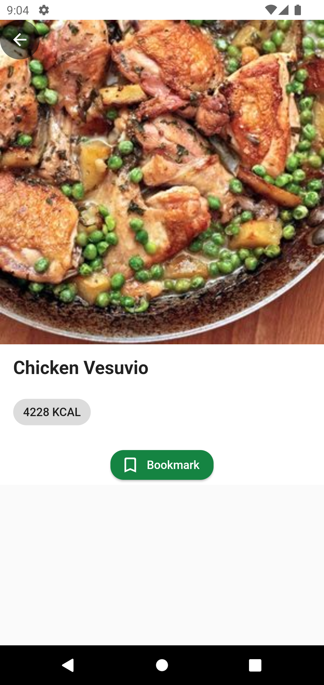
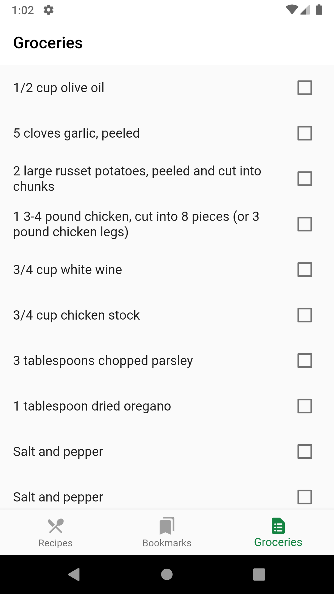
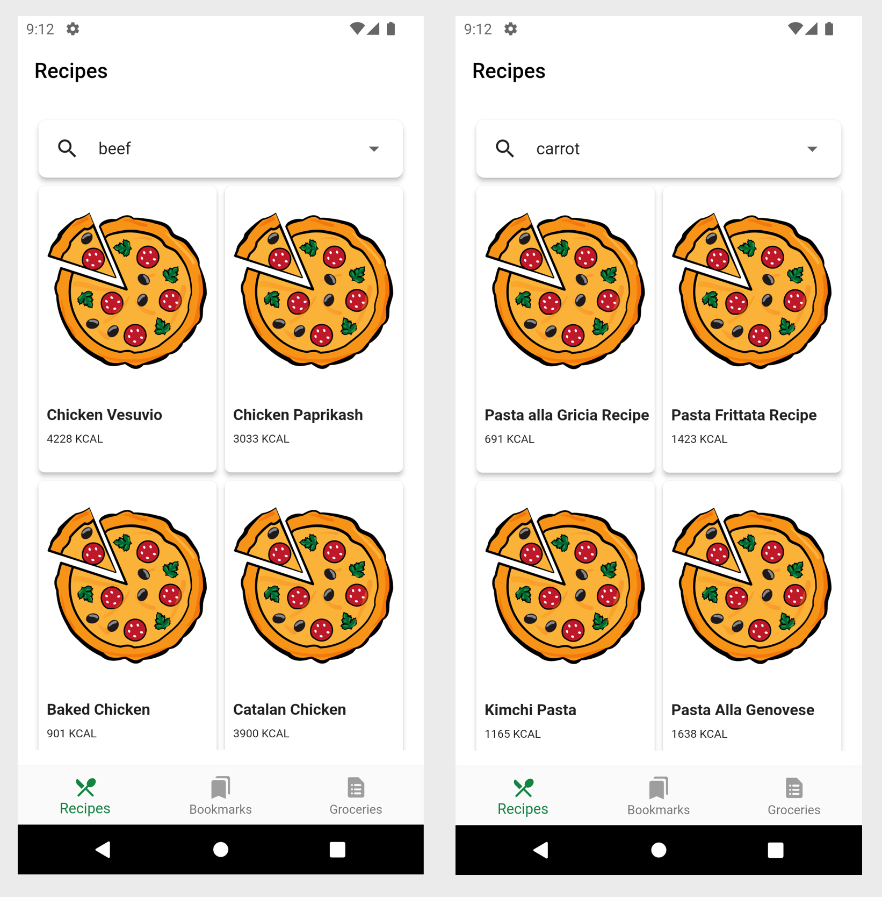
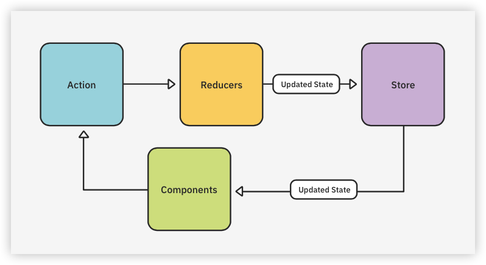

13 Managing State¶
The main job of a UI is to represent state. Imagine, for example, you’re loading a list of recipes from the network. While the recipes are loading, you show a spinning widget. When the data loads, you swap the spinner with the list of loaded recipes. In this case, you move from a loadingto a loaded state. Handling such state changes manually, without following a specific pattern, quickly leads to code that’s difficult to understand, update and maintain. One solution is to adopt a pattern that programmatically establishes how to track changes and how to broadcast details about states to the rest of your app. This is called state management.
To learn about state management and see how it works for yourself, you’ll continue working with the previous project.
Note: You can also start fresh by opening this chapter’s starter project. If you choose to do this, remember to click the Get dependencies button or execute
flutter pub getfrom Terminal. You’ll also need to add your API Key and ID to lib/network/recipe_service.dart.
By the end of the chapter, you’ll know:
- Why you need state management.
- How to implement state management using Provider.
- How to save the current list of bookmarks and ingredients.
- How to create a repository.
- How to create a mock service.
- Different ways to manage state.
Architecture¶
When you write apps and the amount of code gets larger and larger over time, you learn to appreciate the importance of separating code into manageable pieces. When files contain more than one class or classes combine multiple functionalities, it’s harder to fix bugs and add new features.
One way to handle this is to follow Clean Architecture principles by organizing your project so it’s easy to change and understand. You do this by separating your code into separate directories and classes, with each class handling just one task. You also use interfaces to define contracts that different classes can implement, allowing you to easily swap in different classes or reuse classes in other apps.
You should design your app with some or all of the components below:

Notice that the UI is separate from the business logic. It’s easy to start an app and put your database and business logic into your UI code — but what happens when you need to change the behavior of your app and that behavior is spread throughout your UI code? That makes it difficult to change and causes duplicate code that you might forget to update.
Communicating between these layers is important as well. How does one layer talk to the other? The easy way is to just create those classes when you need them. But this results in multiple instances of the same class, which causes problems coordinating calls.
For example, what if two classes each have their own database handler class and make conflicting calls to the database? Both Android and iOS use Dependency Injection or DI to create instances in one place and inject them into other classes that need them. This chapter will cover the Provider package, which does something similar.
Ultimately, the business logic layer should be in charge of deciding how to react to the user’s actions and how to delegate tasks like retrieving and saving data to other classes.
Why you need state management¶
First, what do the terms state and state management mean? State is when a widget is active and stores its data in memory. The Flutter framework handles some state, but as mentioned earlier, Flutter is declarative. That means it rebuilds a UI StatefulWidget from memory when the state or data changes or when another part of your app uses it.
State management is, as the name implies, how you manage the state of your widgets and app.
Two state types to consider are ephemeral state, also known as UI state and app state:
- Use Ephemeral state when no other component in the widget tree needs to access a widget’s data. Examples include whether a
TabBarViewtab is selected orFloatingActionButtonis pressed. - Use App state when other parts of your app need to access a widget’s state data. One example is an image that changes over time, like an icon for the current weather. Another example is information that the user selects on one screen and which should then display on another screen, like when the user adds an item to a shopping cart.
Next, you’ll learn more about the different types of state and how they apply to your recipe app.
Widget state¶
In Chapter 4, “Understanding Widgets”, you saw the difference between stateless and stateful widgets. A stateless widget is drawn with the same state it had when it was created. A stateful widget preserves its state and uses it to (re)draw itself in the future.
Your current Recipes screen has a card with the list of previous searches and a GridView with a list of recipes:

The left side shows some of the RecipeList widgets, while the right side shows the state objects that store the information each widget uses. An element tree stores both the widgets themselves and the states of all the stateful widgets in RecipeList:

If the state of a widget updates, the state object also updates and the widget is redrawn with that updated state.
This kind of management handles state only for a specific widget. But what if you want to manage state for your whole app or share state between widgets and screens? You do this using application state.
Application state¶
In Flutter, a stateful widget can hold state, which its children can access, and pass data to another screen in its constructor. However, that complicates your code and you have to remember to pass data objects down the tree. Wouldn’t it be great if child widgets could easily access their parent data without having to pass in that data?
There are several different ways to achieve that, both with built-in widgets and with third-party packages. You’ll look at built-in widgets first.
Managing state in your app¶
Your app needs to save three things: the list to show in the Recipes screen, the user’s bookmarks and the ingredients. In this chapter, you’ll use state management to save this information so other screens can use it.
At this point, you’ll only save this data in memory so when the user restarts the app, those selections won’t be available. Chapter 15, “Saving Data With SQLite”, will show how to save that data locally to a database for more permanent persistence.
These methods are still relevant for sharing data between screens. Here’s a general idea of how your classes will look:

Stateful widgets¶
StatefulWidget is one of the most basic ways of saving state. The RecipeList widget, for example, saves several fields for later usage, including the current search list and the start and end positions of search results for pagination.
When you create a stateful widget, you call createState(), which stores the state internally in Flutter to reuse when the parent needs to rebuild the widget tree. When the widget is rebuilt, Flutter reuses the existing state.
You use initstate() for one-time work, like initializing text controllers. Then you use setState() to change state, triggering a rebuild of the widget with the new state.
For example, in Chapter 9, “Handling Shared Preferences”, you used setState() to set the selected tab. This tells the system to rebuild the UI to select a page. StatefulWidget is great for maintaining internal state, but not for state outside of the widget.
One way to achieve an architecture that allows sharing state between widgets is to adopt InheritedWidget.
InheritedWidget¶
InheritedWidget is a built-in class that allows its child widgets to access its data. It’s the basis for a lot of other state management widgets. If you create a class that extends InheritedWidget and give it some data, any child widget can access that data by calling context.dependOnInheritedWidgetOfExactType<class>().
Wow, that’s quite a mouthful! As shown below, <class> represents the name of the class extending InheritedWidget.
class RecipeWidget extends InheritedWidget {
final Recipe recipe;
RecipeWidget(Key? key, required this.recipe, required Widget child}) :
super(key: key, child: child);
@override
bool updateShouldNotify(RecipeWidget oldWidget) => recipe != oldWidget.recipe;
static RecipeWidget of(BuildContext context) => context.dependOnInheritedWidgetOfExactType<RecipeWidget>()!;
}
You can then extract data from that widget. Since that’s such a long method name to call, the convention is to create an of() method.
Note:
updateShouldNotify()compares two recipes, which requiresRecipeto implementequals. Otherwise, you need to compare each field.
Then a child widget, like the text field that displays the recipe title, can just use:
RecipeWidget recipeWidget = RecipeWidget.of(context);
print(recipeWidget.recipe.label);
An advantage of using InheritedWidget is it’s a built-in widget so you don’t need to worry about using external packages.
A disadvantage of using InheritedWidget is that the value of a recipe can’t change unless you rebuild the whole widget tree because InheritedWidget is immutable. So, if you want to change the displayed recipe title, you’ll have to rebuild the whole RecipeWidget.
For a while, scoped_model (https://pub.dev/packages/scoped_model) was an interesting solution. It comes from the Fuchsia codebase and builds on top of InheritedWidget to separate UI and data, making the process easier than just using InheritedWidget.
However, since its version 1.0.0 release in November 2018, Google started recommending Provider as a better solution that provides similar functionalities to scoped_model and more. You’ll use Provider to implement state management in your app.
Provider¶
Remi Rousselet designed Provider to wrap around InheritedWidget, simplifying it. Google had already created their own package to handle state management, but realized Provider was better. They now recommend using it, instead.
Google even includes details about it in their state management docs https://flutter.dev/docs/development/data-and-backend/state-mgmt/simple#providerof.
In essence, Provider is a set of classes that simplifies building a state management solution on top of InheritedWidget.
Classes used by Provider¶
Provider has several commonly used classes that you’ll learn about in more detail: ChangeNotifierProvider, Consumer, FutureProvider, MultiProvider and StreamProvider.
One of the key classes, built in the Flutter SDK, is ChangeNotifier.
ChangeNotifier¶
ChangeNotifier is a class that adds and removes listeners, then notifies those listeners of any changes. You usually extend the class for models so you can send notifications when your model changes. When something in the model changes, you call notifyListeners() and whoever is listening can use the newly changed model to redraw a piece of UI, for example.
ChangeNotifierProvider¶
ChangeNotifierProvider is a widget that wraps a class, implementing ChangeNotifier and uses the child widget for display. When changes are broadcast, the widget rebuilds its tree. The syntax looks like this:
ChangeNotifierProvider(
create: (context) => MyModel(),
child: <widget>,
);
Provider offers a central point to manage state, so that you don’t need to manually update different widgets via setState() every time that state changes.
But what happens if you create a model in that widget each time? That creates a new one! Any work that model did is lost the next time. By using create, Provider saves that model instead of re-creating it each time.
Consumer¶
Consumer is a widget that listens for changes in a class that implements ChangeNotifier, then rebuilds the widgets below itself when it finds any. When building your widget tree, try to put a Consumer as deep as possible in the UI hierarchy, so updates don’t recreate the whole widget tree.
Consumer<MyModel>(
builder: (context, model, child) {
return Text('Hello ${model.value}');
}
);
If you only need access to the model and don’t need notifications when the data changes, use Provider.of, like this:
Provider.of<MyModel>(context, listen: false).<method name>
listen: false indicates you don’t want notifications for any updates. This parameter is required to use Provider.of() inside initState().
FutureProvider¶
FutureProvider works like other providers and uses the required create parameter that returns a Future.
FutureProvider(
initialData: null,
create: (context) => createFuture(),
child: <widget>,
);
Future<MyModel> createFuture() async {
return Future.value(MyModel());
}
A Future is handy when a value is not readily available but will be in the future. Examples include calls that request data from the internet or asynchronously read data from a database.
MultiProvider¶
What if you need more than one provider? You could nest them, but it’d get messy, making them hard to read and maintain.
Provider<MyModel>(
create: (_) => Something(),
child: Provider<MyDatabase>(
create: (_) => SomethingMore()
child: <widget>
),
);
Instead, use MultiProvider to create a list of providers and a single child:
MultiProvider(
providers: [
Provider<MyModel>(create: (_) => Something()),
Provider<MyDatabase>(create: (_) => SomethingMore()),
],
child: <widget>
);
StreamProvider¶
You’ll learn about streams in detail in the next chapter. For now, you just need to know that Provider also has a provider that’s specifically for streams and works the same way as FutureProvider. Stream providers are handy when data comes in via streams and values change over time like, for example, when you’re monitoring the connectivity of a device.
It’s time to use Provider to manage state in Recipe Finder. The next step is to add it to the project.
Using Provider¶
Open pubspec.yaml and add the following packages after logging:
provider: ^6.0.3
equatable: ^2.0.5
Provider contains all the classes mentioned above. Equatable helps with equality checks by providing equals() and toString() as well as hashcode. This allows you to check models for equality in maps and it’s necessary for providers.
Run Pub Get to install the new packages.
UI Models¶
In earlier chapters, you created models for the Recipe API. Here, you’ll create simple models to share data between screens.
In lib, create a new directory named data and within it create a new file named repository.dart. Leave that file empty for now.
In lib/data, create a new directory named models. Within it create a new file named ingredient.dart and add the following class:
import 'package:equatable/equatable.dart';
// 1
class Ingredient extends Equatable {
// 2
int? id;
int? recipeId;
final String? name;
final double? weight;
// 3
Ingredient({
this.id,
this.recipeId,
this.name,
this.weight,
});
// 4
@override
List<Object?> get props => [
recipeId,
name,
weight,
];
}
Here’s what’s happening in this code:
- The
Ingredientclass extendsEquatable, to provide support for equality checks. - Add the properties an ingredient needs. You don’t declare
recipeIdoridasfinalso you can change those values later. - Declare a constructor with all the fields.
- When equality checks are performed,
Equatableuses thepropsvalue. Here, you provide the fields you want to use to check for equality.
The next step is to create a class to model a recipe.
Creating the recipe class¶
In models, create recipe.dart then add the following code:
import 'package:equatable/equatable.dart';
import 'ingredient.dart';
class Recipe extends Equatable {
// 1
int? id;
final String? label;
final String? image;
final String? url;
// 2
List<Ingredient>? ingredients;
final double? calories;
final double? totalWeight;
final double? totalTime;
// 3
Recipe(
{this.id,
this.label,
this.image,
this.url,
this.calories,
this.totalWeight,
this.totalTime,
});
// 4
@override
List<Object?> get props => [
label,
image,
url,
calories,
totalWeight,
totalTime,
];
}
The code includes:
Recipeproperties for the recipe text:label,imageandurl.idis not final so you can update it.- A list of ingredients that the recipe contains along with its calories, weight and time to cook.
- A constructor with all fields except ingredients, which you’ll add later.
- Equatable properties, which you’ll use for comparison.
Instead of importing the same files multiple times, you’ll use a single Dart file that exports all the files you need. Essentially, you’ll group multiple imports into a single one.
Remember barrel files introduced in Chapter 5, “Scrollable Widgets”? Well, it’s time to create another one. In the models folder, create models.dart and add the following:
export 'recipe.dart';
export 'ingredient.dart';
Now, you can just import models.dart instead of having to import both recipe.dart and ingredient.dart every time you need them.
With the models in place, it’s now time to implement the conversion from data received via the network to model objects.
Convert data into models to display¶
Open lib/network/recipe_model.dart and import your new models.dart file:
import '../data/models/models.dart';
You need a new method to convert a network ingredient model to a display ingredient model.
Locate // TODO: Add convertIngredients() here at the bottom and replace it with the following:
List<Ingredient> convertIngredients(List<APIIngredients> apiIngredients) {
// 1
final ingredients = <Ingredient>[];
// 2
for (final ingredient in apiIngredients) {
ingredients.add(
Ingredient(
name: ingredient.name,
weight: ingredient.weight,
),
);
}
return ingredients;
}
In this code, you:
- Create a new list of ingredients to return.
- Convert each
APIIngredientsinto an instance ofIngredientand add it to the list.
You’re now ready to create a repository to handle the creation, fetching and deletion of recipes.
Creating a repository¶
Next, you’ll create a repository interface that will provide methods to add and delete recipes and ingredients.
Within data create a file named repository.dart and add the following:
import 'models/models.dart';
abstract class Repository {
// TODO: Add find methods
// TODO: Add insert methods
// TODO: Add delete methods
// TODO: Add initializing and closing methods
}
Remember that Dart doesn’t have the keyword interface; instead, it uses abstract class. That means you need to add the methods that you want all repositories to implement. You’ll do that next.
Finding recipes and ingredients¶
Replace // TODO: Add find methods with the following to help find recipes and ingredients:
// 1
List<Recipe> findAllRecipes();
// 2
Recipe findRecipeById(int id);
// 3
List<Ingredient> findAllIngredients();
// 4
List<Ingredient> findRecipeIngredients(int recipeId);
In this code, you define interfaces to:
- Return all recipes in the repository.
- Find a specific recipe by its ID.
- Return all ingredients.
- Find all the ingredients for the given recipe ID.
Adding recipes and ingredients¶
Next, replace // TODO: Add insert methods to insert a new recipe and any ingredients.
// 5
int insertRecipe(Recipe recipe);
// 6
List<int> insertIngredients(List<Ingredient> ingredients);
Here, you declare methods to:
- Insert a new recipe.
- Add all the given ingredients.
Deleting unwanted recipes and ingredients¶
Then, replace // TODO: Add delete methods to include delete methods:
// 7
void deleteRecipe(Recipe recipe);
// 8
void deleteIngredient(Ingredient ingredient);
// 9
void deleteIngredients(List<Ingredient> ingredients);
// 10
void deleteRecipeIngredients(int recipeId);
In this code, you add methods to:
- Delete the given recipe.
- Delete the given ingredient.
- Delete all the given ingredients.
- Delete all the ingredients for the given recipe ID.
Initializing and closing the repository¶
Now, you’ll add two final methods. Replace // TODO: Add initializing and closing methods with:
// 11
Future init();
// 12
void close();
In this final bit of code, you:
- Allow the repository to initialize. Databases might need to do some startup work.
- Close the repository.
Now that you’ve defined the interface, you need to create a concrete implementation that stores these items in memory.
Creating a memory repository¶
The memory repository is where you store the ingredients in memory. This is a temporary solution, as they are lost each time you restart the app.
In data, create a new file named memory_repository.dart and add these imports:
import 'dart:core';
import 'package:flutter/foundation.dart';
// 1
import 'repository.dart';
// 2
import 'models/models.dart';
To break this code down:
- repository.dart contains the interface definition.
- models.dart exports the
RecipeandIngredientclass definitions.
Defining the memory repository¶
Now, define MemoryRepository by adding the following:
Note:
MemoryRepositorywill have red squiggles until you finish adding all the required methods.
// 3
class MemoryRepository extends Repository with ChangeNotifier {
// 4
final List<Recipe> _currentRecipes = <Recipe>[];
// 5
final List<Ingredient> _currentIngredients = <Ingredient>[];
// TODO: Add find methods
// TODO: Add insert methods
// TODO: Add delete methods
// 6
@override
Future init() {
return Future.value(null);
}
@override
void close() {}
}
Here’s what’s going on in this code:
MemoryRepositoryextendsRepositoryand uses Flutter’sChangeNotifierto enable listeners and notify those listeners of any changes.- You initialize your current list of recipes.
- Then you initialize your current list of ingredients.
- Since this is a memory repository, you don’t need to do anything to initialize and close but you need to implement these methods.
Since this class just saves into memory, you store the recipes and ingredients using lists.
Now, you’re ready to add the methods you need to find, insert and delete recipe data.
Finding stored recipes and ingredients¶
Replace // TODO: Add find methods with these:
@override
List<Recipe> findAllRecipes() {
// 7
return _currentRecipes;
}
@override
Recipe findRecipeById(int id) {
// 8
return _currentRecipes.firstWhere((recipe) => recipe.id == id);
}
@override
List<Ingredient> findAllIngredients() {
// 9
return _currentIngredients;
}
@override
List<Ingredient> findRecipeIngredients(int recipeId) {
// 10
final recipe =
_currentRecipes.firstWhere((recipe) => recipe.id == recipeId);
// 11
final recipeIngredients = _currentIngredients
.where((ingredient) => ingredient.recipeId == recipe.id)
.toList();
return recipeIngredients;
}
This code:
- Returns your current
RecipeList. - Uses
firstWhereto find a recipe with the given ID. - Returns your current ingredient list.
- Finds a recipe with the given ID.
- Uses
whereto find all the ingredients with the given recipe ID.
These methods help find any recipe or set of ingredients you need to display on the screen.
Adding recipes and ingredient lists¶
Replace // TODO: Add insert methods with these, which let you add recipes and lists of ingredients:
@override
int insertRecipe(Recipe recipe) {
// 12
_currentRecipes.add(recipe);
// 13
if (recipe.ingredients != null) {
insertIngredients(recipe.ingredients!);
}
// 14
notifyListeners();
// 15
return 0;
}
@override
List<int> insertIngredients(List<Ingredient> ingredients) {
// 16
if (ingredients.isNotEmpty) {
// 17
_currentIngredients.addAll(ingredients);
// 18
notifyListeners();
}
// 19
return <int>[];
}
In this code, you:
- Add the recipe to your list.
- Call the method to add all the recipe’s ingredients.
- Notify all listeners of the changes.
- Return the ID of the new recipe. Since you don’t need it, it’ll always return 0.
- Check to make sure there are some ingredients.
- Add all the ingredients to your list.
- Notify all listeners of the changes.
- Return the list of IDs added. It’s an empty list for now.
Deleting recipes and ingredients¶
Replace // TODO: Add delete methods with these, to delete a recipe or ingredient:
@override
void deleteRecipe(Recipe recipe) {
// 20
_currentRecipes.remove(recipe);
// 21
if (recipe.id != null) {
deleteRecipeIngredients(recipe.id!);
}
// 22
notifyListeners();
}
@override
void deleteIngredient(Ingredient ingredient) {
// 23
_currentIngredients.remove(ingredient);
}
@override
void deleteIngredients(List<Ingredient> ingredients) {
// 24
_currentIngredients
.removeWhere((ingredient) => ingredients.contains(ingredient));
notifyListeners();
}
@override
void deleteRecipeIngredients(int recipeId) {
// 25
_currentIngredients
.removeWhere((ingredient) => ingredient.recipeId == recipeId);
notifyListeners();
}
Here, you:
- Remove the recipe from your list.
- Delete all the ingredients for this recipe.
- Notify all listeners that the data has changed.
- Remove the ingredients from your list.
- Remove all ingredients that are in the passed-in list.
- Go through all ingredients and look for ingredients that have the given recipe ID, then remove them.
You now have a complete MemoryRepository class that can find, add and delete recipes and ingredients. You’ll use this repository throughout the app.
Using the repository via Provider¶
It’s time to use your newly created repository and Provider. Open main.dart and add these imports:
import 'package:provider/provider.dart';
import 'data/memory_repository.dart';
Now, inside MyApp(), beneath // This widget is the root of your application, replace the build() method including the @override, with:
@override
Widget build(BuildContext context) {
// 1
return ChangeNotifierProvider<MemoryRepository>(
// 2
lazy: false,
// 3
create: (_) => MemoryRepository(),
// 4
child: MaterialApp(
title: 'Recipes',
debugShowCheckedModeBanner: false,
theme: ThemeData(
brightness: Brightness.light,
primaryColor: Colors.white,
primarySwatch: Colors.blue,
visualDensity: VisualDensity.adaptivePlatformDensity,
),
home: const MainScreen(),
),
);
}
In this code, you:
- Use the
ChangeNotifierProviderthat has the typeMemoryRepository. - Set
lazyto false, which creates the repository right away instead of waiting until you need it. This is useful when the repository has to do some background work to start up. - Create your repository.
- Return
MaterialAppas the child widget.
Note: If your code doesn’t automatically format when you save your changes, remember that you can always reformat it by going to the Code menu and choosing Reformat Code.
The code for the model is all in place. It’s now time to use it in the UI.
Using the repository for recipes¶
You’ll implement code to add a recipe to the Bookmarks screen and ingredients to the Groceriesscreen. Open ui/recipes/recipe_details.dart and add the following imports:
import 'package:cached_network_image/cached_network_image.dart';
import 'package:provider/provider.dart';
import '../../network/recipe_model.dart';
import '../../data/models/models.dart';
import '../../data/memory_repository.dart';
This includes the Provider package, the models and the repository. To show a recipe’s details, you need to pass in the recipe you want to show.
Replace // TODO: Replace with new constructor and the line below it with:
final Recipe recipe;
const RecipeDetails({
Key? key,
required this.recipe,
}) : super(key: key);
This will allow you to initialize a widget with a specific recipe.
Displaying the recipes’ details¶
You need to show the recipe’s image, label and calories on the Details page. The repository already stores all of your currently bookmarked recipes.
Still in ui/recipes/recipe_details.dart, add this as the first line of the build() method, just above return Scaffold(:
final repository = Provider.of<MemoryRepository>(context);
final size = MediaQuery.of(context).size;
This uses Provider to retrieve the repository created in main.dart. You’ll use it to add the bookmark. The size variable is the get the screen size and use it for the image’s size.
Note: If your recipe_details.dart file does not have the // TODO comments, take a look at the starter project.
Locate // Comment out Align(). Comment out it and the Align() widget beneath it. When you’re done it should look like this:
// // Comment out Align()
// Align(
// alignment: Alignment.topCenter,
// child: Image.asset(
// 'assets/images/pizza_w700.png',
// height: 200,
// width: 200,
// ),
// ),
and beneath the commented out Align() add:
Align(
alignment: Alignment.topLeft,
child: CachedNetworkImage(
imageUrl: recipe.image ?? '',
alignment: Alignment.topLeft,
fit: BoxFit.fill,
width: size.width,
),
),
Locate // TODO: Replace hardcoded Chicken Vesuvio, and make note of where const is used.
Now, replace // TODO: Replace hardcoded Chicken Vesuvio and the whole const Padding() widget beneath it with the following:
Padding(
padding: const EdgeInsets.only(left: 16.0),
child: Text(
recipe.label ?? '',
style: const TextStyle(
fontSize: 22,
fontWeight: FontWeight.bold,
),
),
),
Notice that it’s not a const anymore. You’re now using the recipe.label, which can change. This is why the const usage changed. The widgets that don’t change have const.
Replace // TODO: Replace hardcoded calories and the const Padding() lines below it with:
Padding(
padding: const EdgeInsets.only(left: 16.0),
child: Chip(
label: Text(
getCalories(recipe.calories),
),
),
),
Notice it, too, is no longer a const. getCalories() is from recipe_model.dart.
Next, you’ll enable the user to tap the Bookmark button to add the recipe to the list of bookmarks.
Bookmarking recipes¶
The first step is to insert the recipe into the repository.
Continuing to work in ui/recipes/recipe_details.dart, replace // TODO: Add insertRecipe here and not the line beneath, with:
repository.insertRecipe(recipe);
This adds the recipe to your repository. To receive that recipe, you need to update recipe_list.dart to send the recipe to the details page.
Open ui/recipes/recipe_list.dart and add the models import:
import '../../data/models/models.dart';
Then go to _buildRecipeCard() and change return const RecipeDetails(); to:
final detailRecipe = Recipe(
label: recipe.label,
image: recipe.image,
url: recipe.url,
calories: recipe.calories,
totalTime: recipe.totalTime,
totalWeight: recipe.totalWeight,
);
detailRecipe.ingredients = convertIngredients(recipe.ingredients);
return RecipeDetails(recipe: detailRecipe);
This creates a new Recipe from the network recipe using convertIngredients() to convert each ingredient.
Now, hot reload the app. Enter chicken in the search box and tap the magnifying glass to perform the search. You’ll see something like this:

Select a recipe to go to the details page:

Click the Bookmark button and the details page will disappear.
Now, select the Bookmarks tab. At this point, you’ll see a blank screen — you haven’t implemented it yet. You’ll add that functionality next.
Implementing the Bookmarks screen¶
Open ui/myrecipes/my_recipes_list.dart and add the following imports:
import 'package:cached_network_image/cached_network_image.dart';
import 'package:provider/provider.dart';
import '../../data/models/recipe.dart';
import '../../data/memory_repository.dart';
This includes Provider to retrieve the repository as well as the Recipe class.
On the Bookmarks page, the user can delete a bookmarked recipe by swiping left or right and selecting the delete icon. To implement this, find and replace // TODO: Add deleteRecipe() here (bottom of the class) with:
void deleteRecipe(MemoryRepository repository, Recipe recipe) async {
// 1
repository.deleteRecipe(recipe);
// 2
setState(() {});
}
In this code, you use:
- The repository to delete the recipe.
setState()to redraw the view.
Still in _MyRecipesListState, replace the line below // TODO: Update recipes declaration with:
List<Recipe> recipes = [];
At // TODO: Remove initState(), remove the whole definition of initState() because you’ll fill the list from the repository.
Next, replace // TODO: Add Consumer with the following:
return Consumer<MemoryRepository>(builder: (context, repository, child) {
recipes = repository.findAllRecipes();
This creates a Consumer of a MemoryRepository, which receives the repository. Remember that Consumer is a widget that can receive a class from a parent Provider.
The method findAllRecipes() will return either all the current recipes or an empty list.
At // TODO: Add recipe definition add:
final recipe = recipes[index];
itemBuilder receives the current index so that we can retrieve the recipe at that index.
Locate // TODO: Replace with image from recipe and comment out the whole leading: Image.asset(). It should look like this:
// leading: Image.asset(
// 'assets/images/pizza_w700.png',
// height: 200,
// width: 200,
// ),
and add:
leading: CachedNetworkImage(
imageUrl: recipe.image ?? '',
height: 120,
width: 60,
fit: BoxFit.cover,
),
At // TODO: Replace title hardcoding replace title with:
title: Text(recipe.label ?? ''),
At // TODO: Update first onPressed, replace it and the onPressed(context{})declaration with, ignoring the red squiggles these will go away in two more steps:
onPressed: (context) {
deleteRecipe(
repository,
recipe,
);
},
This calls deleteRecipe(), which you defined above.
At // TODO: Update second onPressed, replace the comment and the other onPressed(context){}) with:
onPressed: (context) {
deleteRecipe(
repository,
recipe,
);
},
Again ignore the red squiggles.
Finally, to get rid of those annoying red squiggles, replace // TODO: Add final brace and parenthesis with:
},
);
If you left your app running while making all of the above changes, hot reload the app.
If you stopped your app or did a hot restart instead of hot reload then return to the Recipes tab and bookmark a recipe.
Select the Bookmarks tab and you should see the recipe you bookmarked. Something like this:
You’re almost done, but the Groceries view is currently blank. Your next step is to add the functionality to show the ingredients of a bookmarked recipe.
Implementing the Groceries screen¶
Open ui/shopping/shopping_list.dart and add the following:
import 'package:provider/provider.dart';
import '../../data/memory_repository.dart';
Here you import Provider and the repository.
Remove the line:
static const ingredients = <String>[]
Replace // TODO: Add Consumer widget with:
return Consumer<MemoryRepository>(builder: (context, repository, child) {
final ingredients = repository.findAllIngredients();
This adds a Consumer widget to display the current ingredients.
Replace the line below // TODO: Update title to include name with:
title: Text(ingredients[index].name ?? ''),
This will display the ingredient’s name property.
At // TODO: Add closing brace and parenthesis, add:
},
);
This closes the Consumer widget.
Hot reload and make sure you still have one bookmark saved.
Now, go to the Groceries tab to see the ingredients of the recipe you bookmarked. You’ll see something like this:

Congratulations, you made it! You now have an app where state changes can be monitored and notified across different screens, thanks to the infrastructure of Provider.
But there’s one more thing to think about: Hitting the real web server with a request every time you want to try a code change isn’t a good idea. It’s time-consuming and doesn’t give you control over the returned data.
Your next step is to build a mock service that returns specific responses that imitate the real API.
Using a mock service¶
You’ll add an alternate way to retrieve data. This is handy because:
- The Edamam site limits the number of queries you can make for the developer account.
- It’s good practice to have a service that returns a mocked version of the data, especially for testing.
In assets, there are two recipe JSON files. You’ll create a mock service provider that randomly returns one of those files.
If you get errors when you retrieve data from a production server, you can just swap out the current repository with the mock service.
Start by creating a new directory under lib named mock_service. Next, create mock_service.dart in that new directory.
Add the imports:
import 'dart:convert';
import 'dart:math';
import 'package:http/http.dart' as http;
// 1
import 'package:chopper/chopper.dart';
// 2
import 'package:flutter/services.dart' show rootBundle;
import '../network/model_response.dart';
import '../network/recipe_model.dart';
Here’s what you’re doing:
- You import Chopper to create instances of
Response. showmeans that you want a specific class or classes to be visible in your app. In this case, you wantrootBundleto be visible for loading JSON files.
Note: You can hide classes by using
hide.
Now, add MockService:
class MockService {
// 1
late APIRecipeQuery _currentRecipes1;
late APIRecipeQuery _currentRecipes2;
// 2
Random nextRecipe = Random();
// TODO: Add create and load methods
// TODO: Add query method
}
Here’s what this code does:
- Use
_currentRecipes1and_currentRecipes2to store the results loaded from the two JSON files. nextRecipeis an instance ofRandomthat creates a number between 0 and 1.
Next, you’ll load recipes from the JSON files.
Implementing methods to create and load recipes¶
Now, replace // TODO: Add create and load methods with:
// 3
void create() {
loadRecipes();
}
void loadRecipes() async {
// 4
var jsonString = await rootBundle.loadString('assets/recipes1.json');
// 5
_currentRecipes1 = APIRecipeQuery.fromJson(jsonDecode(jsonString));
jsonString = await rootBundle.loadString('assets/recipes2.json');
_currentRecipes2 = APIRecipeQuery.fromJson(jsonDecode(jsonString));
}
To break down this code:
- The
create()method, which Provider will call, just callsloadRecipes(). rootBundleloads the JSON file as a string.jsonDecode()creates a map thatAPIRecipeQuerywill use to get a list of recipes.
Next, replace // TODO: Add query method with the following:
Future<Response<Result<APIRecipeQuery>>> queryRecipes(
String query,
int from,
int to,
) {
// 6
switch (nextRecipe.nextInt(2)) {
case 0:
// 7
return Future.value(
Response(
http.Response(
'Dummy',
200,
request: null,
),
Success<APIRecipeQuery>(_currentRecipes1),
),
);
case 1:
return Future.value(
Response(
http.Response(
'Dummy',
200,
request: null,
),
Success<APIRecipeQuery>(_currentRecipes2),
),
);
default:
return Future.value(
Response(
http.Response(
'Dummy',
200,
request: null,
),
Success<APIRecipeQuery>(_currentRecipes1),
),
);
}
}
Here, you:
- Use your random field to pick a random integer, either 0 or 1.
- Wrap your
APIRecipeQueryresult inSuccess,ResponseandFuture.
You’ll notice that this looks like the method from RecipeService. That’s because the mock service should look the same.
That’s all for mocking. Now you’ll use it in the app, instead of the real service.
Using the mock service¶
Open up main.dart and add the MockService interface:
import 'mock_service/mock_service.dart';
Currently, build() is using ChangeNotifierProvider. Now, you need to use multiple providers so it can also use MockService. MultiProvider will accomplish this.
Find // This widget is the root of your application. and replace the whole build()method beneath it with this:
@override
Widget build(BuildContext context) {
return MultiProvider(
// 1
providers: [
// 2
ChangeNotifierProvider<MemoryRepository>(
lazy: false,
create: (_) => MemoryRepository(),
),
// 3
Provider(
// 4
create: (_) => MockService()..create(),
lazy: false,
),
],
// 5
child: MaterialApp(
title: 'Recipes',
debugShowCheckedModeBanner: false,
theme: ThemeData(
brightness: Brightness.light,
primaryColor: Colors.white,
primarySwatch: Colors.blue,
visualDensity: VisualDensity.adaptivePlatformDensity,
),
home: const MainScreen(),
),
);
}
Here’s what’s going on in the code above:
MultiProvideruses theprovidersproperty to define multiple providers.- The first provider is your existing
ChangeNotifierProvider. - You add a new provider, which will use the new mock service.
- Create the
MockServiceand callcreate()to load the JSON files (notice the ..cascade operator). - The only child is a
MaterialApp, like before.
Now, you’re ready to load and display mocked recipes.
Loading mocked recipes¶
Open ui/recipes/recipe_list.dart and add the MockService and Provider imports:
import '../../mock_service/mock_service.dart';
import 'package:provider/provider.dart';
In _buildRecipeLoader(), change future: RecipeService.create().queryRecipes( to:
future: Provider.of<MockService>(context).queryRecipes(
You’ve now changed recipe_list.dart to use your new MockService. Next you’re going to update the images.
Open lib/ui/myrecipes/my_recipes_list.dart, locate // TODO: Replace with image from recipe and uncomment the Image.asset code below it.
While you’re there, comment out leading: CachedNetworkImage() just below the newly uncommented Image.asset code.
Now, you’ll do the same in lib/ui/recipes/recipe_details.dart. Uncomment the code below // Comment out Align() and comment out the Align() beneath the Image.asset.
The final result should look like this:
...
// Comment out Align()
Align(
alignment: Alignment.topCenter,
child: Image.asset(
'assets/images/pizza_w700.png',
height: 200,
width: 200,
),
),
// Align(
// alignment: Alignment.topLeft,
// child: CachedNetworkImage(
// imageUrl: recipe.image ?? '',
// alignment: Alignment.topLeft,
// fit: BoxFit.fill,
// width: size.width,
// ),
// ),
...
These commenting out and uncommenting steps make it so that the dummy images will display.
Note: You won’t be able to view the images from a mocked service.
Stop and restart the app. Search for any term on the Recipes tab.
Notice how, no matter what you type, you only get chicken or pasta recipes. That’s because MockService only provides those two results.

In the future, it will be easier to test specific changes or add more mocked data.
Congratulations, you now have a service that works even if you don’t have an account or your network isn’t working. You can even use MockService for testing. The advantage is that you know what results you’ll get because data is stored in static JSON files.
Amazing work! There was a lot in this chapter to learn, but it’s important work. State management is a key concept for Flutter development.
Is Provider the only option for state management? No. Brace yourself for a quick tour of alternative libraries.
Other state management libraries¶
There are other packages that help with state management and provide even more flexibility when managing state in your app. While Provider features classes for widgets lower in the widget tree, other packages provide more generic state management solutions for the whole app, often enabling a unidirectional data flow architecture.
Such libraries include Redux, BLoC, MobX and Riverpod. Here’s a quick overview of each.
Redux¶
If you come from web or React development, you might be familiar with Redux, which uses concepts such as actions, reducers, views and store. The flow looks like this:

Actions, like clicks on the UI or events from network operations, are sent to reducers, which turn them into a state. That state is saved in a store, which notifies listeners, like views and components, about changes.
The nice thing about the Redux architecture is that a view can simply send actions and wait for updates from the store.
To use Redux in Flutter, you need two packages: redux and flutter_redux.
For React developers migrating to Flutter, an advantage of Redux is that it’s already familiar. If you are not familiar with it, it might take a bit to learn it.
BLoC¶
BLoC stands for Business Logic Component. It’s designed to separate UI code from the data layer and business logic, helping you create reusable code that’s easy to test. Think of it as a stream of events: some widgets submit events and other widgets respond to them. BLoC sits in the middle and directs the conversation, leveraging the power of streams.
It’s quite popular in the Flutter Community and very well documented.
MobX¶
MobX comes to Dart from the web world. It uses the following concepts:
- Observables: Hold the state.
- Actions: Mutate the state.
- Reactions: React to the change in observables.
MobX comes with annotations that help you write your code and make it simpler.
One advantage is that MobX allows you to wrap any data in an observable. It’s relatively easy to learn and requires smaller generated code files than BLoC does.
Riverpod¶
Provider’s author, Remi Rousselet, wrote Riverpod to address some of Provider’s weaknesses. In fact, Riverpod is an anagram of Provider! Rousselet wanted to solve the following problems:
- Remove the dependency on Flutter to make it usable with pure Dart code.
- Be compile safe. Have the compiler catch errors that occur with Provider.
- Have more features.
- Be more flexible.
Riverpod is pretty new and it looks like a promising state management package to use in the future.
Before you go¶
If you wish to continue using your finished app in the next chapter and want to be able to see recipe images, in my_recipes_list.dart and recipe_details.dart remove the Image.asset code and uncomment the CachedNetworkImage code.
Note: If you wish to keep your code with the mock images for reference, you can use the next chapter’s starter project.
Key points¶
- State management is key to Flutter development.
- Provider is a great package that helps with state management.
- Other packages for handling application state include Redux, Bloc, MobX and Riverpod.
- Repositories are a pattern for providing data.
- By providing an
Interfacefor the repository, you can switch between different repositories. For example, you can switch between real and mocked repositories. - Mock services are a way to provide dummy data.
Where to go from here?¶
If you want to learn more about:
- State management, go to https://flutter.dev/docs/development/data-and-backend/state-mgmt/intro.
- For Flutter Redux go to https://pub.dev/packages/flutter_redux.
- For Bloc, go to https://bloclibrary.dev/#/.
- For MobX, go to https://github.com/mobxjs/mobx.dart.
- For Riverpod, go to https://riverpod.dev/.
- For Clean Architecture, go to https://pusher.com/tutorials/clean-architecture-introduction.
In the next chapter you’ll learn all about streams, to handle data that can be sent and received continuously. See you there!